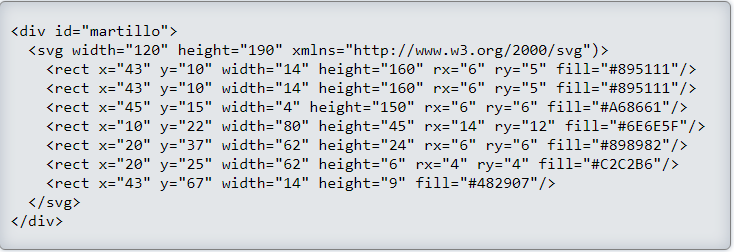
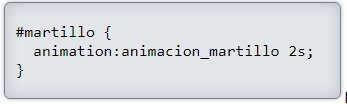

De una manera parecida a las transiciones, pero con una mayor potencialidad, en HTML5 tenemos a nuestra disposición las animaciones (animation).Para empezar con algo sencillo, primero vamos a hacer paso a paso que el martillo (creado en SVG)
y que ya hemos utilizado en otros temas- gire al colocar el cursor encima.
PASO A PASO
Creamos el objeto a animar
Primero, creamos dentro de un <"div"> el objeto, imagen o texto que realizará la animación (en este caso, el martillo).
Así, dentro de la página html, creamos un <"div"> llamado martillo y dentro creamos un dibujo SVG del martillo que rotará.

Establecemos la animación
Seguidamente, en el código CSS, vamos a incluir dos cosas.
Por una parte, en el selector del <"div"> donde está el martillo, indicamos qué animación tendrá que reproducir, indicando un nombre y la duración de la animación expresada en segundos (entre otras propiedades opcionales que a continuación veremos).

El nombre de la animación (animación_martillo) y la duración (2s) son valores obligatorios, pero existen valores opcionales que nos permiten personalizar la animación, como son:
animation-timing-function : Define el tipo de (easing) aceleración que tendrá la animación.
linear: la velocidad es siempre la misma durante toda la animación.
ease: la animación comienza lenta, después rápida y acaba lento.
ease-in: (aceleración) la animación empieza lenta y va acelerándose progresivamente.
ease-out: (deceleración) la animación empieza rápida y va decelerando progresivamente.
ease-in-out: la animación empieza y acaba lenta y en el recorrido central va rápida.
animation-iteration-count: Indica el número de veces que se repetirá la animación.
infinite: la animación se repite indefinidamente.
número de repeticiones: se repite el número de veces indicado (por defecto es 1).
animation-direction: Establece la dirección de la animación.
normal: la animación se reproduce siempre tal y como la hemos definido.
alternate: primero se reproduce en la dirección definida y posteriormente al revés (y así sucesivamente).
animation-delay: Indica si existe retardo (o tiempo de espera) para que se inicie la animación.
número de segundos de espera: El número de segundos seguido de "s".
Definimos cómo será la alineación
Igualmente, dentro del mismo código CSS, definimos en qué consistirá dicha animación, indicando el nombre 'animacion_martillo', que hemos creado en el paso anterior.
Toda la animación se puede dividir en tantos pasos como sea necesario, aunque lo mínimo son 2: inicio (0%) y final (100%).
En este ejemplo se han incluido 3 pasos. En el inicio de la animación (0%) se empieza con una rotación del <"div"> martillo de 0 grados (0deg), en la mitad de la animación (50%), el <"div"> martillo tendrá una rotación de 90 grados (rotará hacia la derecha) y cuando la animación finalice (100%), el martillo volverá a su rotación inicial.